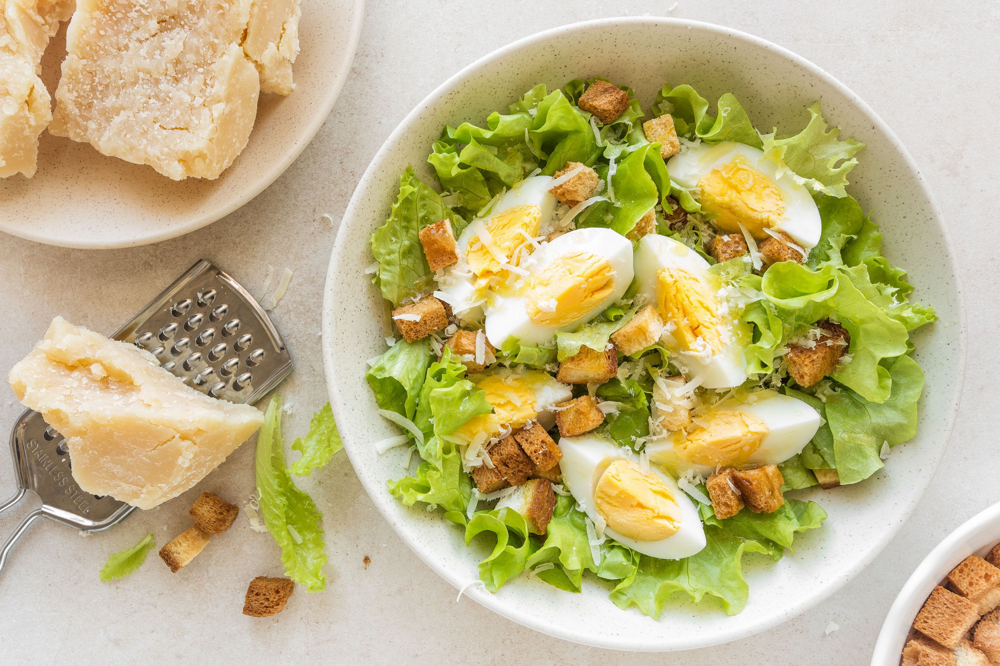

Caesar Salad

Description
A bold, refreshing salad with lots of texture and flavour to match!
(Source: https://www.thespruceeats.com/caesar-salad-recipe-256363 visited 9/3/2022)
Ingredients
For the Salad
- 3 slices white or wheat bread, crusts removed
- 2 tablespoons neutral oil
- 4 slices bacon, chopped
- 3 large eggs
- 1 large head romaine lettuce, washed, patted dry
- 4 to 5 tablespoons Caesar dressing
- Freshly grated Parmesan cheese, for garnish
For the Caesar Dressing
- 2 large egg yolks
- 2 anchovies, finely chopped
- 1 teaspoon Dijon mustard
- 1 cup freshly grated parmesan cheese
- 1 clove garlic, pressed or finely chopped
- 3.4 ounces (100 milliliters) olive oil
- 2 teaspoons white wine vinegar, or lemon juice
Steps
Make the Salad
- Gather the ingredients.
- Put the bread into 1/2-inch (1.27-centimeter) cubes. Heat 2 tablespoons neutral oil in a skillet over medium-low heat. Gently fry the bread for about 4 to 5 minutes, turning occasionally, until crisp and golden. Remove bread with a slotted spoon and drain on paper towels. Set aside.
- Fry the bacon in the same pan over medium-low heat until crispy. Remove with a slotted spoon and drain on paper towels. Set aside.
- Meanwhile, boil 3 eggs starting in cold water. Once the water reaches a rolling boil, boil for 3 minutes for soft-boiled and 6 minutes for hard boiled. Remove from water and rinse under cold water until cool enough to handle. Peel and set aside.
Make the Dressing
- Place 2 egg yolks, chopped anchovies, mustard, and garlic in a large mixing bowl. Whisk vigorously to combine ingredients. Slowly add the oil a few drops at a time, while continuing to whisk vigorously. The mixture will thicken.
- Add the vinegar or lemon juice and whisk again. The dressing should have the consistency of whipping cream. If it is too thick, add a teaspoon of warm water and whisked rinse under cold water until cool enough to handle. Peel and set aside.
Assemble the Salad
- Roughly but evenly chop the lettuce and place in a large mixing bowl. Add 4 to 5 tablespoons of the dressing and toss well to coat the lettuce. Add the croutons and bacon and toss again. Cut the boiled eggs into quarters.
- Divide salad into 4 serving bowls and top with boiled egg quarters. Grate on some Parmesan cheese and serve immediately.
- Enjoy!